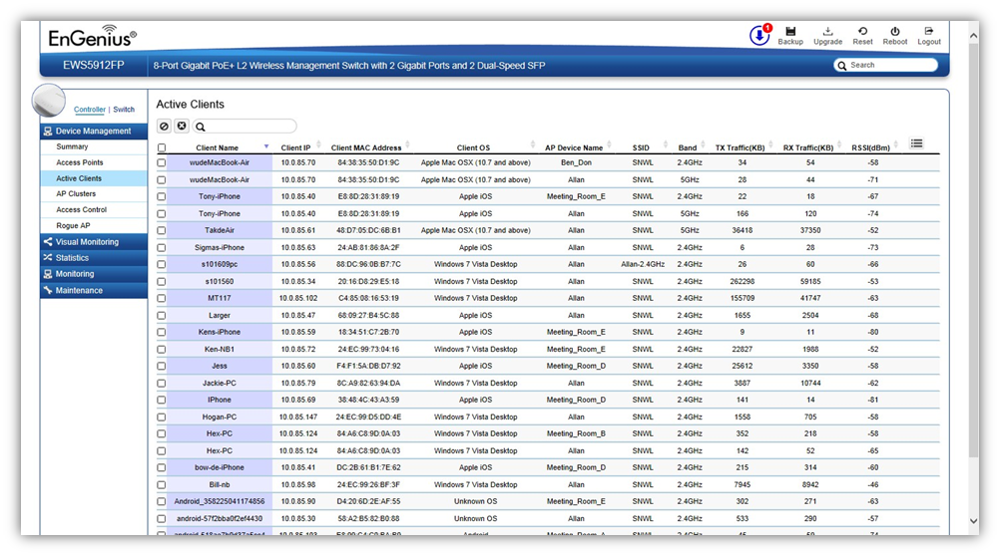

Device Management > Active Clients
From here, you can view information, temporarily disconnect and permanently block the wireless clients that are associated with the Access Points that the EWS Switch manages. The EWS Switch is able to identify client devices by their Operating System, device type and host name, if available. If multiple Access Points are connected to the network, use the search bar to find an Access Point by its name.

Kick Client
Use this function to temporarily disconnect a wireless client from the network. The disconnected client can simply reconnect manually if they wish to.
Ban Client
Use this function to permanently block a wireless client from the network.
Go to Device Management > Access Control to unblock the wireless client.
Search Bar
Use the Search Bar to search for Wireless Clients managed by the EWS Switch using the following criteria: Client Name, Client IP, Client MAC Address, Client OS, AP Device Name, AP MAC Address, Model Name, SSID, Band, TX Traffic, RX Traffic.

Client Name |
Displays the name of the wireless client connected to the Access Point. |
Client IP |
Displays the IP address of the wireless client connected to the Access Point. |
Client MAC Address |
Displays the MAC address of the wireless client connected to the Access Point. |
Client OS |
Displays the type of operating system the wireless client connected to the Access Point is running on. |
AP Device Name |
Displays the name of the Access Point which the client is connected to. |
AP MAC Address |
Displays the MAC address of the Access Point which the client is connected to. |
Model Name |
Displays the model name of the Access Point which the client is connected to. |
SSID |
Displays the SSID of the Access Point which the client is connected to. |
Band |
Displays whether the wireless client is connected to the 2.4GHz or 5GHz radio. |
TX Traffic (KB) |
Displays the total traffic transmitted to the Wireless Client. |
RX Traffic (KB) |
Displays the total traffic received from the Wireless Client. |
RSSI (dBm) |
Displays the received signal strength indicator in terms of dBm. |
Created with the Personal Edition of HelpNDoc: Full-featured multi-format Help generator